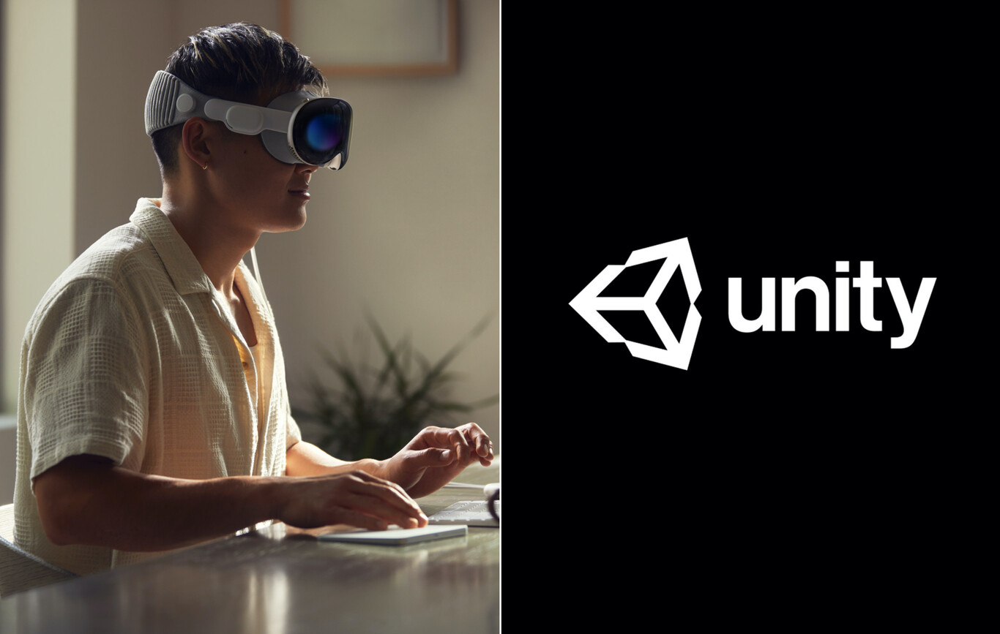

Lo Ultimo
El anuncio de las Apple Vision Pro tiene una ganadora bastante inesperada: Unity Technologies
Esta semana asistimos virtualmente a la presentación del que puede ser uno de los productos más importantes de Apple en años (con el paso del tiempo veremos si finalmente esto es así). Estamos hablando de las Vision Pro, unas gafas de realidad mixta que llegarán al mercado el año que viene de la mano de un arsenal tecnológico que pretende ofrecer una experiencia inmersiva nunca antes vista. Pero inmediatamente después del evento ocurrió un fenómeno en el mercado que no pasó desapercibido. Como señala CNBC, las acciones de una pequeña compañía llamada Unity Technologies dieron un importante salto y cerraron el día con un aumento del 17%. Esto nos lleva a preguntarnos, al igual que muchos otros, qué papel tiene Unity en los planes de la firma dirigida por Tim Cook. Veamos.
Unity, una compañía clave en el éxito de las gafas Vision Pro
Como hemos visto, Apple acaba de inaugurar una nueva categoría de producto con las Vision Pro. Y si bien estas gafas se beneficiarán enormemente de las bondades del ecosistema de la compañía de Cupertino, parte de su éxito depende del trabajo de los desarrolladores externos, que serán los encargados de crear aplicaciones que conquisten a los futuros usuarios.